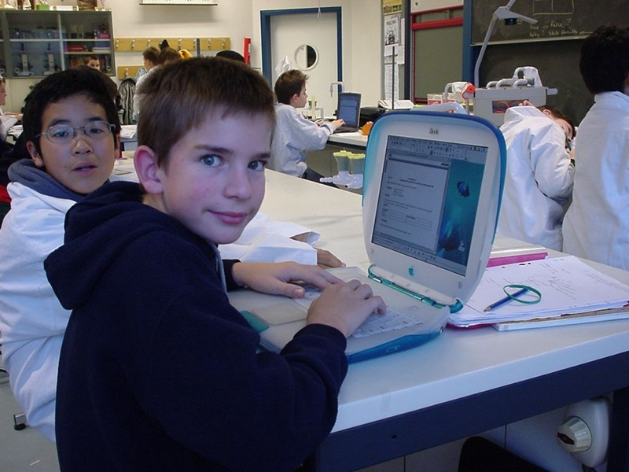

IconPush Documentation
This is the documentation for
IconPush, a visual search tool for 32x32 icons.
Usage
Choose a colour from the colour picker, click a pixel, and click Search to find icons with that pixel value.
Icon database
TensorFlow works really well with large datasets of images. Show me what you can do with these icons!
To get all 131,788 PNG files for the 32x32 icons, download the 96.6 MB zip file from Mega:
You can also download 351 summary pages with 27x14 icons per page, for the 13-inch MacBook Air:
There are also 6603 summary pages with 4x5 icons per page, for mobile devices:
If you want the 129.9 MB Icon Archiver 4.0 archive file, you can get that from Free.fr:
History of IconPush
From the 10th of February 2001 to the 10th of October 2002, I collected icons.
This was a popular pastime in the days before Mac OS X, when icons had a maximum size of 32x32 pixels.
I used a program called
Icon Archiver 4.0, which could automatically scan a disk for icons and add them to a database.

I was only 11 years old, and I never had a way to pay
Alessandro Levi Montalcini for his program, so I always had to wait for a few seconds while the program opened.
If you're reading this, Alessandro, please get in touch! I don't have a job, so I still can't afford to pay you, but I'd like to thank you for introducing me to databases.
As my collection grew, the database started to push the limits of my clamshell iBook G3.
Opening 132.5 MB of icons in only 192 MB of RAM was slow. When I upgraded to Mac OS 10.2 Jaguar, icon sizes grew to 512px, and I stopped collecting icons.
I'm not as talented as
Susan Kare, but when the iPodLinux project wanted some icons for iPod Desktop (an alternative GUI to Podzilla), I drew a few in July 2004.

The iPod used List view, whereas the iPhone uses Icon view. I'm surprised that collecting icons hasn't come back in fashion!
My first computer was a Mac Plus in 1999, when I was 9 years old. My dad brought it home, and told me that if I could fix it, it was mine! But it only had a black and white screen.
The family computer at the time was a Mac LC III, and its AppleColor High-Resolution RGB screen supported 4096 colours.
When I got an iBook G3 in 2000, I was excited to finally see millions of colours!

The first colour icons were available on the Macintosh II in March 1987. The era of 32x32 icons ended in February 2003, when Mac OS 9.2 was no longer bundled with iMacs.
In those days, the World Wide Web was just getting started, and dial-up connections were slow. Software was usually delivered on shareware CDs with magazines, such as MacWorld or MacFormat.
If IconPush becomes popular, I'll collect icons from all my
MacFormat CDs and sort them by year.
Technical details
Exporting from Icon Archiver wasn't easy. The PNG export function failed after a few thousand icons. Instead, I exported everything to Custom Folder Icons.
I didn't have enough disk space on my old iBook for that, so I used
COIV (SheepShaver) with a 15 GB disk image.
dd if=/dev/zero of=15000Meg bs=1032192 count=15000
Icon Archiver made 660 folders with 200 icons each.
I then used geticon from
osxiconutils to convert the folder icons to ICNS files.
find Subfolders/Custom\ Icons\ Folder.1/ -execdir /Users/peter/Desktop/osxiconutils/bin/geticon {} /Users/peter/Desktop/osxiconutils/bin/Icons/Custom\ Icons\ Folder.1/{}.icns \;
Then I converted the ICNS files to PNGs using
icns2png.
find PNGs/ -execdir icns2png -x {} \;
Next, I moved all the PNGs into a single folder. Special characters in filenames broke any shell script methods, so I ended up using Finder and "Keep Both".
I'm now stuck with a few
un-deletable files that have the NUL character in their filename.
A lot of files have similar names, which are all spaces, e.g. " 32x32x32.png". This is because MacFormat CDs would show the MacFormat logo in the folder. It was made of many 32x32 pieces, arranged together. It looked weird in list view.
Next, I sorted the 32x32 icons into a separate folder, because some were 16x16 or other sizes.
To convert the PNGs to TXT, I used the convert command from
imagemagick.
find . -name "*.png" -exec convert {} {}.txt \;
I then wrote
txtToPixelValues.sh, a bash script to turn the pixel values into a directory tree. This is very slow to run, so I probably should optimise it.
The format is pixelValues/[columnNumber]/[rowNumber]/[hexColour][opacity].txt. For example, pixelValues/0/0/FFFFFFFF.txt
find . -name "*.png" -exec ../txtToPixelValues.sh {} \;
There are too many pixelValues files to upload to Github (7.1 million files making a total of 65.51 GB). Therefore I used
copyPixelValues16colours.sh to limit the web version to only 16 colours.
./copyPixelValues16colours.sh
I also made some summary pages using montage from
imagemagick, in case you just want to scroll through lots of pictures.
For that, I had to choose the number of icons per full-screen page (20 for mobile devices, 378 for MacBook Air), put them into folders with
makeFoldersWithFileCount.sh, and then combine each folder into a single image.
./makeFoldersWithFileCount.sh
montage -geometry 32x32+10+10 -tile 4x5 PNGs32x32x32_subfolders_20/dir_002/*.png dir_002.png
Future work
I'd like to expand the icon database to include icons sorted by year from all my
MacFormat CDs.
Another feature I'd like to add is to let people draw their own icons using the grid and export them to an HTML5 canvas for downloading as PNG.
Other software
palettes from Windows or Amiga would be interesting, if I can find icon collections for those platforms.
Right now it's more important that I go back to writing job applications though. Please email me at
peterburk@gmail.com if you're able to help me find a job.